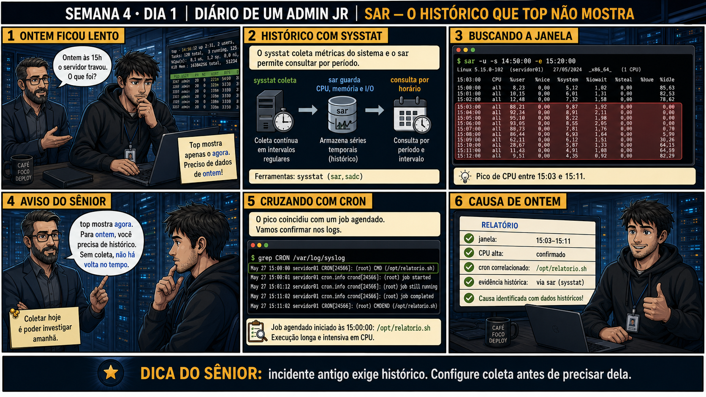

DIARIO DE UM ADMIN JR. | FASE 1 — LINUX, DO BÁSICO AO AVANÇADO
Antes de começar — 20 segundos de memória (Dia 5, Semana 3)
1. Sexta-feira passada, quais três fontes você cruzou para provar quem tinha acessado um servidor? 2. Naquele caso, o dado JÁ existia nas três fontes — só faltava cruzar. Hoje um colega pergunta sobre um pico de ontem às 15h e não existe NENHUM dado — qual é o problema novo que isso revela?
1.last, lastlog e auditd. 2. O problema de hoje é mais básico: sem coleta de histórico configurada com antecedência (o sar/sysstat), não existe dado nenhum pra cruzar depois. Sexta-feira o desafio era juntar fontes; hoje é garantir que a fonte exista antes de precisar dela.
🔗 Conecta com a Semana 3 inteira: top/htop, journalctl, syslog, dmesg e as fontes
de acesso te ensinaram a ler o AGORA e o log já registrado. Mas e quando alguém pergunta sobre o que
aconteceu ONTEM às 15h, e nenhum log de aplicação registrou nada de anormal? Sem histórico coletado, não há
volta no tempo.
🔓 Privilégio de hoje: consultar histórico de performance com sar. Você ganha
o hábito de configurar coleta contínua ANTES de precisar dela — porque sem coleta, não existe investigação
retroativa possível.
Semana 4 · Dia 1 | Nível Júnior
sar: O Histórico Que o top Nunca Mostrou
top mostra o agora; pra ontem, você precisa de histórico coletado com antecedência
ANTES DE ALTERAR, OBSERVE. DEPOIS DE ALTERAR, VALIDE.

1. O chamado
#3428PRIORIDADE MÉDIA09:15aberto por: colega de equipe
"Ontem às 15h o servidor travou, o que foi? Você tem como ver isso agora?"
O top só mostra o agora. Pra investigar ontem, o que precisa ter sido feito ANTES?
💡 Passa o mouse nas palavras destacadas pra ver uma dica rápida — clica se quiser a explicação completa com analogia.
2. O sênior te conta
🧑🏫 antes dos termos técnicos, a história de hoje
Hoje um colega perguntou pro Júnior: "ontem às 15h o servidor travou, o que foi?". O reflexo dele foi
abrir o top — o mesmo comando que salvou a semana passada. Segurei: "top só mostra o AGORA.
Ontem já passou. Você precisa de algo que já estava gravando antes do incidente acontecer."
Expliquei a diferença entre tirar uma foto e ter um filme: top é uma foto única do instante; o
sar consulta um filme completo, já gravado pelo sysstat em intervalos
regulares. Rodamos sar -u -s 14:50:00 -e 15:20:00 e lá estava: CPU em 88-92% entre 15:03 e
15:11. Cruzamos com grep CRON /var/log/syslog e encontramos um job — relatorio.sh
— rodando exatamente na mesma janela.
O Júnior quase descartou isso como coincidência. Segurei: correlação de horário TÃO exata não é
coincidência de se ignorar — é evidência histórica real, documentada, não suposição. E teve um detalhe
importante: nem todo servidor tem sar pronto pra usar. Sem o sysstat instalado e coletando ANTES do
incidente, não existe volta no tempo possível — a lição de hoje não é só "como usar sar", é "configure a
câmera antes de precisar da gravação".
3. Decodificador de conceitos
Clica em qualquer termo pra ver a definição completa e uma analogia do dia a dia:
4. Ferramentas e leitura da evidência
Comando
O que observar e por que importa
sar -u -s 14:50:00 -e 15:20:00
Consulta o uso de CPU histórico entre dois horários específicos.
grep CRON /var/log/syslog
Confirma se algum job agendado rodou no mesmo período do pico.
$ sar -u -s 14:50:00 -e 15:20:00
15:03:00 all 88,21 0,00 9,87 1,92 0,00 0,00
15:04:00 all 92,34 0,00 8,91 2,11 0,00 0,00
15:11:00 all 43,00 0,00 4,91 1,08 0,00 0,00
$ grep CRON /var/log/syslog
May 27 15:00:00 servidor01 CRON[24566]: (root) CMD (/opt/relatorio.sh)
May 27 15:11:02 servidor01 CRON[24566]: (root) job completed
5. Laboratório guiado — pegue na mão, comando por comando
Por que fizemos isso: sem essa instalação, não existe "gravação" nenhuma acontecendo — é literalmente o pré-requisito de tudo que vem depois na aula de hoje.
Cilada comum: assumir que sysstat já vem pronto por padrão, como o colega da história de hoje — na maioria das distros, precisa ser instalado e ativado manualmente.
Ação: Espere a coleta acumular dados e consulte o histórico de CPU sem filtro de horário.
# espere alguns minutos, ou force com:
sudo sadc
sar -u
🔍 Detalhar esse comando
sudo sadc
Força uma coleta imediata de métricas do sistema, sem esperar o próximo ciclo automático.
sar -u
Consulta o histórico de uso de CPU já coletado.
Resultado esperado: pelo menos algumas linhas de dados históricos de CPU aparecendo.
Por que fizemos isso: confirmar que existem dados é o passo antes de filtrar por período — sem isso, um sar -u vazio pode significar "sem carga" ou "sem coleta", e você precisa distinguir os dois.
Cilada comum: rodar sar logo após instalar e concluir "não funciona" porque ainda não passou tempo suficiente pra acumular dados.
Se o seu resultado foi diferente
"Cannot open /var/log/sysstat/saXX: No such file or directory" → o sysstat acabou de ser instalado e ainda não gerou o arquivo do dia. Rode sudo sadc manualmente para forçar uma coleta imediata, ou aguarde o próximo ciclo automático do timer do systemd (geralmente a cada 10 minutos).
Ação: Veja outros tipos de histórico disponíveis além de CPU.
sar -r
sar -b
🔍 Detalhar esses comandos
sar
Consulta dados HISTÓRICOS de desempenho coletados periodicamente pelo sysstat — diferente de top/ps, que só mostram o momento atual.
-r
Relatório de uso de memória RAM ao longo do tempo.
-b
Relatório de atividade de I/O (leitura/escrita em disco) ao longo do tempo — usado no comando seguinte, sar -b, para comparar com a memória.
Resultado esperado: dados históricos de memória e I/O, além de CPU.
Por que fizemos isso: sar não é só CPU — conhecer as outras métricas amplia o que você consegue investigar retroativamente, não só picos de processamento.
Cilada comum: assumir que sar -u sozinho resolve qualquer investigação histórica — memória e I/O podem ser a causa real, não CPU.
🧑🏫 Aqui entra o Mentor (em breve): se você precisar interpretar um padrão histórico complexo no sar, este é o ponto onde o chat com o Sênior-IA vai ajudar.
Ação: Gere uma carga de teste e confirme que o pico ficou registrado no histórico.
Gera carga de CPU de propósito (yes imprime 'y' infinitamente) e descarta a saída, rodando em segundo plano.
kill %1
Encerra o processo de carga pelo número do job em segundo plano.
sar -u
Consulta o histórico de CPU de novo, para confirmar que o pico de carga ficou registrado.
Resultado esperado: pico de CPU visível no sar, correspondente ao horário exato do teste.
Por que fizemos isso: ver o próprio pico de teste aparecer no histórico é a prova concreta de que a coleta está funcionando — não é fé, é verificação.
Cilada comum: esquecer de encerrar o processo yes com kill — ele fica consumindo CPU indefinidamente se você não parar.
Ação: Documente janela de tempo, métrica investigada, valor do pico e causa correlacionada.
# não é comando de shell — é o registro final
# ex: "Janela: 15:03-15:11. Métrica: CPU 88-92%. Correlação: job cron relatorio.sh no mesmo horário. Causa provável: job intensivo, não incidente."
Resultado esperado: registro completo reproduzindo o painel 6 da prancha de hoje.
Por que fizemos isso: registrar a correlação explicitamente (não só o pico isolado) é o que transforma um número no sar numa explicação real e defensável do que aconteceu.
Cilada comum: documentar só "CPU alta às 15h" sem a correlação com o cron — sem essa conexão, o relatório não explica NADA, só descreve um sintoma.
6. Antes de ver as opções — tenta responder
🧠 Recall ativo: qual é a diferença fundamental entre o que top mostra e o que
sar mostra?
top mostra a
foto do agora.
sar consulta um
histórico
já coletado pelo sysstat,
permitindo consultar qualquer período passado — mas só se a coleta já estava rodando antes do incidente.
QUESTÃO 1 de 3
7. Questão comentada — clica numa alternativa
Um colega quer saber o que causou lentidão ontem às 15h. Qual é a ferramenta
correta pra essa investigação?
💡 Analogia do Sênior para Fixar: O pacote 'sysstat' (sar) é como o gravador de telemetria da Fórmula 1: coleta métricas a cada 10 minutos para você ver como a CPU e o disco se comportaram na madrugada.
QUESTÃO 2 de 3 — cenário de erro real
7.1 O pico de CPU (15:03-15:11) coincide com um job cron — coincidência?
O sar mostra CPU acima de 88% entre 15:03 e 15:11. O log de cron mostra um job
/opt/relatorio.sh rodando exatamente nesse mesmo intervalo.
Qual é a conclusão correta diante dessa correlação?
💡 Analogia do Sênior para Fixar: O comando 'sar -q' (run-queue) é como contar quantas pessoas estavam na fila do banco às 15h de ontem: prova se a lentidão foi um pico passageiro ou constante.
QUESTÃO 3 de 3 — detalhe que confunde todo iniciante
7.2 "sar já vem instalado e coletando por padrão, certo?"
Um colega assume que sar sempre tem dados prontos pra consultar, em qualquer servidor,
sem nenhuma configuração prévia.
Essa suposição está correta?
💡 Analogia do Sênior para Fixar: Consultar arquivos históricos em '/var/log/sysstat/saXX' é como abrir o livro-caixa do dia anterior: permite auditar incidentes mesmo após o servidor ter reiniciado.
8. Procedimento profissional
Confirme se o sysstat está instalado e coletando (systemctl status sysstat).
Consulte sar filtrado pelo horário exato reportado no incidente.
Cruze o pico encontrado com outras fontes (cron, journalctl) do mesmo período.
Documente a causa com dados históricos reais, não suposição.
Se o sysstat não estava coletando, registre isso como lição pra configurar antes do próximo incidente.
Prevenção — o que evita repetir esse tipo de problema
Padronize a instalação do sysstat como parte do provisionamento de TODO servidor novo, desde
o primeiro dia — nunca deixe pra instalar só depois que um incidente já aconteceu e não há dados pra
investigar. Documente no runbook os horários de jobs cron intensivos conhecidos, pra correlacionar picos de
CPU rapidamente sem precisar redescobrir isso toda vez.
9. Validação e encerramento
sar foi usado pra consultar um período específico, não só o estado atual.
A correlação com outras fontes (cron, journal) foi verificada antes de concluir a causa.
A disponibilidade da coleta (sysstat ativo) foi confirmada antes de assumir que os dados existiam.
A causa foi documentada com evidência histórica real.
Rollback e limites
sar é somente leitura — não existe rollback. O limite real é temporal: se a coleta
não estava ativa antes do incidente, não existe like nenhum "voltar no tempo" possível — por isso configurar
a coleta antes é tão importante quanto saber consultá-la depois.
💡 Sobre repetição espaçada: "coletar hoje é poder investigar amanhã" conecta
com toda a Semana 3 de logs — a diferença é que hoje o dado é numérico e histórico, não um evento pontual.
O Anki vai conectar os dois.
10. Resposta final
Alternativa correta: B. Nesta aula, a decisão correta foi consultar
sar -u pra aquele período específico, se o sysstat já estava coletando dados. O ponto central do caso é
este: incidente antigo exige histórico — configure a coleta antes de precisar dela.
🔓 O que você desbloqueou hoje
Capacidade de investigar incidentes passados com dados históricos reais.
Amanhã você aprende a correlacionar logs entre dois servidores diferentes, quando o problema atravessa
mais de uma máquina.